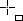
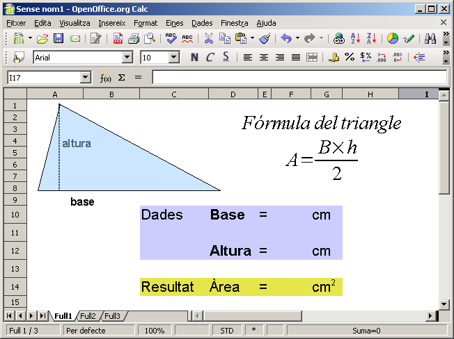
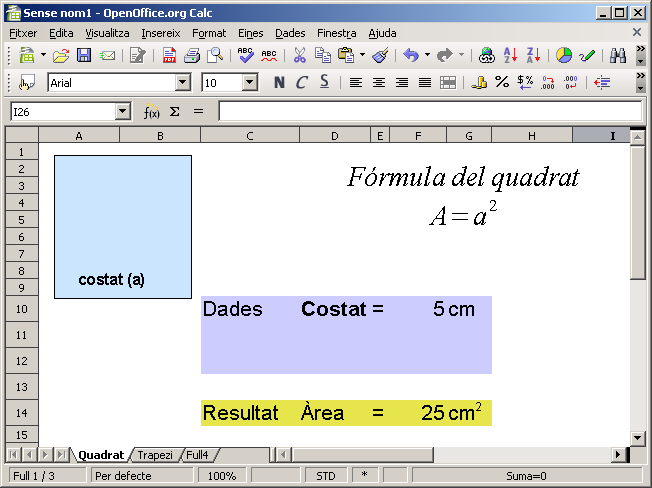

Aprofitant les capacitats del full de càlcul per fer operacions senzilles o complexes, el càlcul de l'àrea d'una figura plana consistirà, fonamentalment, a inserir la fórmula de la figura i subministrar les dades. Seguiu el procés, del càlcul de l'àrea d'un triangle, en la següent pràctica
Inseriu un nou full anomenant-lo “M1P6 Càlcul d'àrees (triangle)”
Inseriu, al full de càlcul, la figura geomètrica d'un triangle on apareguin indicades la base i l'altura, per tal d'il·lustrar gràficament l'activitat. També, tot i que no és imprescindible, afegiu la fórmula corresponent al càlcul de l'àrea de la figura, fent ús de l'editor de fórmules del 'LibreOffice Math.
Premeu sobre l'eina Mostra les funcions de dibuix, que farà aparèixer, a la part inferior de la finestra del Calc, les eines de dibuix
Desplegueu l'eina Formes bàsiques tot i prement sobre la fletxa de la dreta de l'eina. En fer-ho, obtindreu totes les formes bàsiques disponibles que es presenten en una petita finestra
D'aquesta escolliu la corresponent a Triangle isòsceles
Quan el passegeu per la zona del full de càlcul, el punter del ratolí haurà pres la forma . Feu clic i, sense deixar anar el botó d'acció del ratolí, arrossegueu-lo fins a l'extrem inferior dret de la zona que voldreu que ocupi la figura del triangle
Desplaceu, en horitzontal, el vèrtex superior del triangle fins a donar-li la forma d'un triangle escalè
Feu clic amb el botó dret sobre la figura i, del menú de context, escolliu l'opció Àrea
De la finestra que obtindreu, premeu la pestanya Transparència i activeu l'opció Transparència. Deixeu el valor de la transparència al 50%
Premeu D'acord
Afegiu una línia vertical per simbolitzar l'altura i els textos altura i base al costat de les línies corresponents. Observeu tot el procés en la següent animació
Entreu la llista de les dades. Utilitzeu una cel·la diferent per al nom, el signe =, la cel·la on s'introduirà el valor i, finalment per les unitats.
De forma similar, inseriu les dades per al resultat
Doneu format a les cel·les de forma que el resultat quedi semblant al següent

Per amagar les línies de la graella s'ha de fer el següent:
Demaneu Eines | Opcions | LibreOffice Calc | Visualitza
Desactiveu la casella Línies / Línies de la graella
Premeu D'acord
A la cel·la F14 introduïu la fórmula que calcularà l'àrea: =SI(F10*F12/2=0;"";F10*F12/2)
El format condicional que s'utilitza en aquesta fórmula, impedirà que aparegui un 0 (zero) en el resultat de l'àrea, mentre no s'afegeixin les dades corresponents a la base i l'altura.
Protegiu totes les cel·les, excepte F10 i F12, per impedir que es puguin esborrar les fórmules i altres elements del full
Seleccioneu les cel·les F10 i F12 (clic en la primera i Ctrl+clic en la segona)
Demaneu Format | Cel·les | Protecció de cel·les
Desactiveu la casella Protecció / Protegit
Premeu D'acord
Demaneu Eines | Protegeix el document | Full
Deixeu la contrasenya en blanc i premeu D'acord
Canvieu el nom del full per Triangle
Feu Alt+clic a sobre del nom del full i escriviu Triangle
Premeu Retorn per desar el canvi.
Deseu el resultat a la vostra carpeta de treball amb el nom Àrees
El procés d'aquesta pràctica serà molt similar al de l'anterior. Canviaran, evidentment, la figura, la seva fórmula i la fórmula que calcularà l'àrea del quadrat
Inserir un nou full anomenant-lo “M1P6 Càlcul d'àrees (quadrat)”
Amb ajut de les eines de dibuix dibuixeu la figura d'un quadrat i anomeneu les dimensions.
Inseriu la fórmula de l'àrea del quadrat
En aquest cas, podeu fer servir l'expressió Fórmula del quadrat newline A={a}^2
El resultat podria ser similar al següent

La fórmula que calcularà l'àrea del quadrat en la cel·la F14 serà =SI(F10=0;"";F10^2)